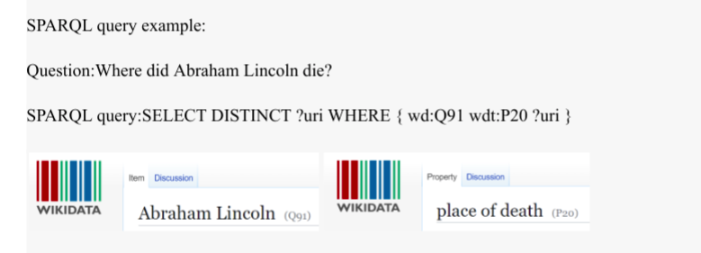
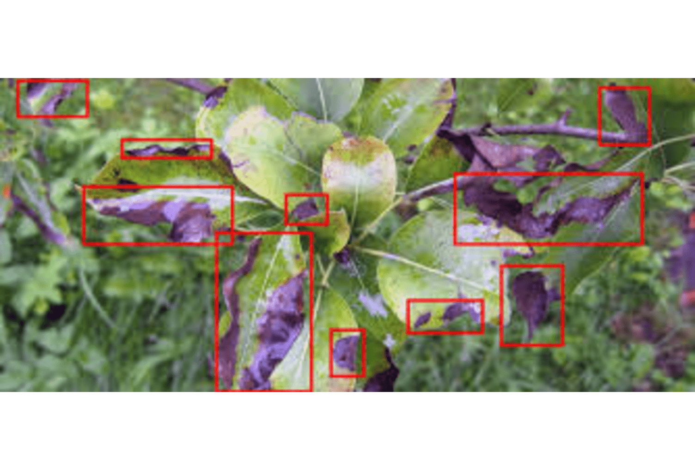
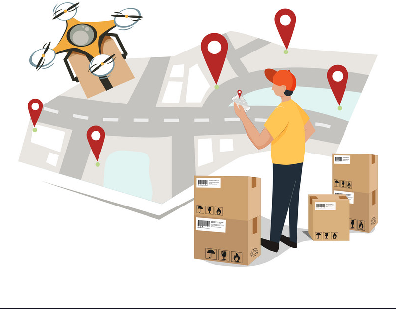

Featured Projects
Explore projects showcasing my expertise in Machine Learning, AI models, and Exploratory Data Analysis (EDA).

Natural Language to SPARQL Query Generation
Designed a system that converts natural language questions into SPARQL queries for retrieving answers from Wikidata. It utilizes an NMT model trained on the QALD-9 dataset.
Frameworks: PyTorch, Seq2Seq, Bi-LSTM, Attention Mechanisms, SPARQL, NLP
GitHub
UvU Net: An Ensemble Generator for Image Colorization
UvU-Net is an advanced ensemble model for sketch-to-photo colorization, leveraging a dual U-Net architecture with residual connections.
Frameworks: PyTorch, CycleGAN, U-Net, Bahdanau Attention, Deep Learning
GitHubMembership Inference Attack on GANs
Implemented a black-box Membership Inference Attack on GANs to determine if a data point was used in training, using a shadow model and membership classifier.
Frameworks: PyTorch, NumPy, scikit-learn, matplotlib
GitHub
Diffusion-based Adversarial Purification over Latent Embeddings
Developed a defense against adversarial attacks using latent diffusion, achieving 43.4% robust accuracy on PGD attacks (ε=16/255) on ImageNet.
Frameworks: PyTorch, torchvision, NumPy, Pillow
GitHubMultilingual Assistive Model for Visually Impaired Users
Supports visually impaired users by integrating image captioning, translation, and text-to-speech in multiple Indic languages.
Frameworks: Pytorch, Blip's model, Transformers, IndicTrans2, gTTS API
GitHub View Deployed App
Plant Disease Detection using Big Data Tools
Trained a 9-layer CNN model on a 55 GB dataset of plant images using Hadoop HDFS and Apache Spark for processing.
Frameworks: Pyspark, TensorFlow, Apache Spark, Keras, OpenCV
GitHub
Dynamic Grocery Delivery Route Optimiser Using Q-Learning
Developed an algorithm using Q-Learning to optimize delivery routes, minimizing cost and distance traveled.
Frameworks: NumPy, Matplotlib, Seaborn, Pandas
GitHubBreaking the Silence
An in-depth exploration of rape statistics in India using EDA and visualizations on criminal data.
Frameworks: Seaborn, Pandas, NumPy, Plotly Express, Matplotlib
GitHubHybrid Chatbot Development for the Department of Justice
A hybrid chatbot for the Department of Justice integrating retrieval-based and generative models.
Frameworks: Rasa, Python, Scrapy, Llama3, Langchain, RAG
Indic Audio-to-Image Generation
An AI-powered system to transform audio prompts into visual representations using simultaneous translation.
Frameworks: Whisper, IndicTrans2, Stable Diffusion 2.1, Stanza, Streamlit
GitHub